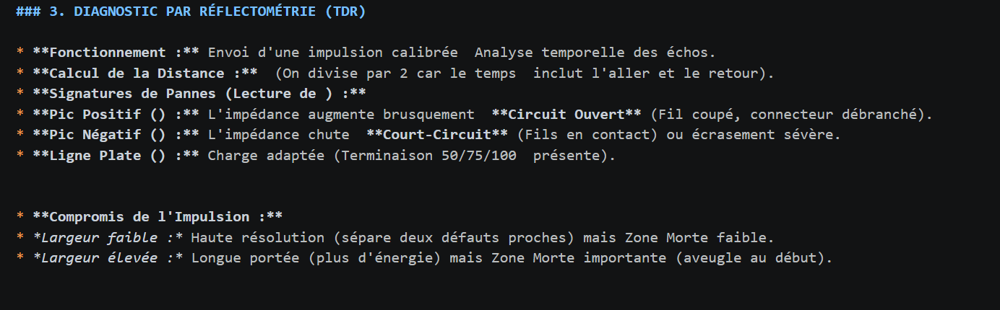

Le projet en bref
Cette SAÉ consistait à manipuler des supports physiques (coaxial RG58, Ethernet, Fibre FTTH) pour en déterminer les caractéristiques réelles à l'aide d'instruments de mesure professionnels (Oscilloscope, GBF, Photomètre).
Difficultés rencontrées & Solutions
1. Calcul de longueur par réflectométrie (Cuivre)
Pour mesurer un câble de longueur inconnue, nous devions observer l'écho d'une impulsion à l'oscilloscope. La difficulté réside dans la lecture précise du décalage temporel ($\Delta t$) entre le signal émis et le signal réfléchi, car chaque nanoseconde compte dans le calcul final.

2. Calibration et Pertes Optiques (Fibre)
La mesure de l'atténuation d'une liaison fibrée nécessite une calibration parfaite. L'enjeu est d'établir une puissance de référence stable avant d'insérer les bobines de test, sous peine de fausser tout le budget optique.

Bilan personnel
Ce projet m'a appris que la fiabilité d'un réseau dépend d'abord de sa couche physique. J'ai compris l'importance de la métrologie et de la précision des relevés pour diagnostiquer correctement des défauts de câblage ou des pertes optiques excessives.
Compétences (AC)
Matériel mobilisé
- Oscilloscope Numérique
- Analyseur DTF (Distance to Fault)
- Photomètre & Source Optique
- Câbles RG58 & Bobines de fibre
Traces & Preuves
Livrables et relevés de laboratoire :
📸 Mes calculs manuscrits (Cuivre) 📸 Mes relevés de pertes (Fibre) 📄 Fiche de révision Cuivre 📄 Fiche de révision Fibre